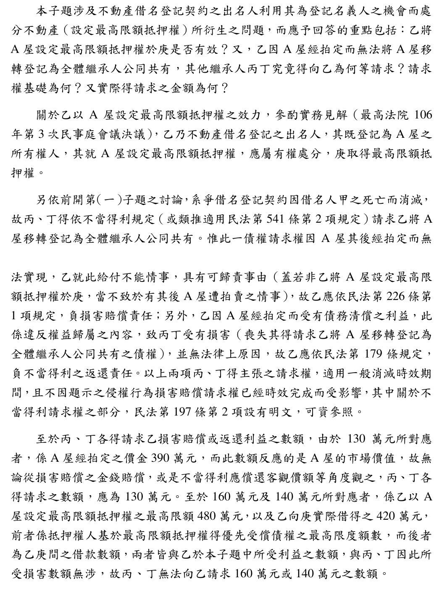
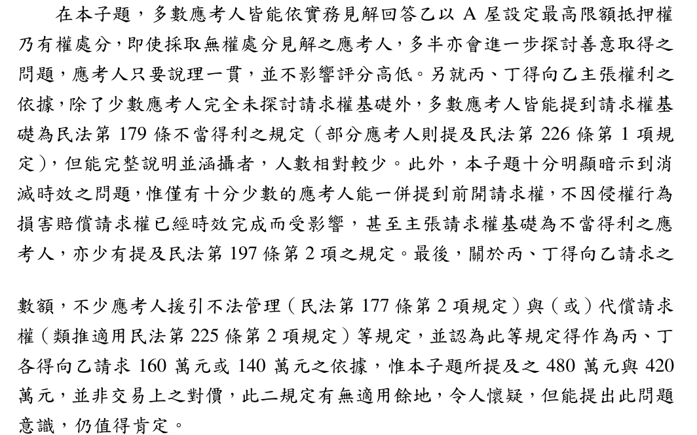

房子被拍賣了，丙、丁各能要多少？
111年律師第二試｜民法與民事訴訟法（一）｜第一題第（四）小題（40分）
題目
這一題有四個小題。本頁只做第（四）小題，用得到的事實畫黃色底線。
- （一）丙、丁得否請求乙將A屋登記為乙、丙、丁三人公同共有？（20分）
- （二）丙單獨通知乙不得再繼續使用A屋，並請求乙遷出A屋，是否有理？（20分）
- （三）因X大樓住戶戊之過失引發火災，致B屋部分毀損。丙得否單獨向戊請求賠償按其應繼分計算之損害？（20分）
- （四）乙利用其為A屋所有權登記名義人之機會，提供A屋予不知乙僅係A屋出名人之庚設定最高限額新臺幣（下同）480萬元之抵押權，以擔保乙於設定時向庚實際借得之420萬元借款債務。嗣因乙未能清償前開債務，庚遂聲請法院拍賣A屋，並就拍定之價金受償390萬元，其餘30萬元仍未獲清償。之後，乙、丙、丁就甲之遺產完成分割協議，各取得三分之一。如丙、丁就乙前開處分A屋，得依侵權行為規定向乙請求賠償之權利已經時效完成，則丙、丁得否另為如下之請求？（40分）1.乙應給付丙、丁各160萬元 2.乙應給付丙、丁各140萬元 3.乙應給付丙、丁各130萬元本頁只做這一題
影片說明
影片依序示範：主播介紹、整題讀一遍並框出第（四）小題、五個人與三條錢條、學弟學姊帶出四個問題、106年度決議與借名登記的繩子、第759條之1第2項、第226條第1項、第179條與第181條但書、分割遺產後各自請求、時效的三條路、三條錢條各切三份、第177條第2項與類推第225條第2項、三個易錯點，最後把擬答從頭看一遍。
人物與三個數字
| 人 | 身分 | 本小題的角色 |
|---|---|---|
| 甲 | 借名人，已死亡 | 借名登記契約因甲死亡而消滅（第（一）小題） |
| 乙 | 出名人，也是繼承人 | 拿A屋設定最高限額抵押權給庚，借款還不出來 |
| 丙、丁 | 繼承人 | 向乙請求，侵權行為請求權已時效完成 |
| 庚 | 抵押權人、債權人 | 不知乙只是出名人 |
| 題目裡的數字 | 是什麼 | 除以三 |
|---|---|---|
| 480萬元 | 最高限額，抵押權人優先受償的上限 | 160萬元 |
| 420萬元 | 乙向庚實際借得的金額（其中30萬元未受償） | 140萬元 |
| 390萬元 | A屋拍定價金，全數清償乙的債務 | 130萬元 |
答題順序：四個問題
閱卷委員指出，多數考生以第179條為請求權基礎，提到第226條第1項的較少，能完整說明並涵攝的人更少；題目明顯暗示時效問題，但只有十分少數考生指出這些請求權不受侵權時效完成影響。
先分清楚：請求權基礎與輔助規範
| 條文 | 在本題的角色 |
|---|---|
| 第226條第1項 | 請求權基礎：可歸責於債務人的給付不能，請求損害賠償 |
| 第179條 | 請求權基礎：不當得利，與第226條第1項競合 |
| 第181條但書 | 輔助：利益性質上不能返還時，償還價額 |
| 第125條、第197條第2項 | 輔助：時效 |
| 106年度第3次民事庭會議決議；第759條之1第2項 | 前提：庚是否取得抵押權 |
| 第177條第2項、類推第225條第2項 | 不採：480萬元、420萬元都不是交易對價 |
本題用到的條文
先看要件，再套本案事實。原文中畫底線的部分，就是本題用到的那一句。
民法第759條之1第2項：信賴登記（第①問，採無權處分說時）
因信賴不動產登記之善意第三人，已依法律行為為物權變動之登記者，其變動之效力，不因原登記物權之不實而受影響。
白話相信登記簿、又不知道真相的人，已經辦好登記，就不會因為原本的登記不實而失去權利。
| 要件 | 本案事實 | 結果 |
|---|---|---|
| 信賴不動產登記之善意第三人 | 庚不知乙僅係A屋出名人 | ✓ |
| 已依法律行為為物權變動之登記 | 最高限額抵押權已設定登記 | ✓ |
民法第226條第1項：給付不能的損害賠償（第②問）
因可歸責於債務人之事由，致給付不能者，債權人得請求賠償損害。
白話欠別人一件東西，因為自己的原因沒辦法交了，就要賠。
| 要件 | 本案事實 | 結果 |
|---|---|---|
| 債之關係 | 借名登記契約因甲死亡而消滅，全體繼承人得請求乙將A屋移轉登記為全體公同共有 | ✓ |
| 給付不能 | A屋遭拍定，乙無法再移轉登記 | ✓ |
| 可歸責於債務人 | 若非乙設定抵押權，A屋不致遭拍賣 | ✓ |
民法第179條：不當得利（第②問）
無法律上之原因而受利益，致他人受損害者，應返還其利益。雖有法律上之原因，而其後已不存在者，亦同。
白話沒有正當理由拿到好處，害別人受損，要還。
本題乙用A屋的拍定價金清償自己欠庚的錢，受有債務消滅的利益；這個利益依權益歸屬應屬全體繼承人，致丙、丁喪失移轉登記請求權而受損害。
民法第181條：返還範圍（第②問）
不當得利之受領人，除返還其所受之利益外，如本於該利益更有所取得者，並應返還。但依其利益之性質或其他情形不能返還者，應償還其價額。
白話拿到的好處沒辦法原樣還，就還它的價錢。
本題「債務消滅」這種利益無法原樣返還，所以償還價額，也就是390萬元。
民法第125條、第197條第2項：時效（第③問）
第125條：請求權，因十五年間不行使而消滅。但法律所定期間較短者，依其規定。
第197條第2項：損害賠償之義務人，因侵權行為受利益，致被害人受損害者，於前項時效完成後，仍應依關於不當得利之規定，返還其所受之利益於被害人。
白話侵權行為的時效過了，不代表其他請求權也跟著過了；第197條第2項還特別提醒，可以改走不當得利。
本題題目只說侵權行為請求權時效完成，沒有交代其他請求權的起算點，所以擬答寫「原則適用第125條」，不斷言一定沒過時效。
第177條、第225條第2項、第541條第2項（點開看）
民法第177條
管理事務不合於前條之規定時，本人仍得享有因管理所得之利益，而本人所負前條第一項對於管理人之義務，以其所得之利益為限。前項規定，於管理人明知為他人之事務，而為自己之利益管理之者，準用之。
民法第225條第2項
債務人因前項給付不能之事由，對第三人有損害賠償請求權者，債權人得向債務人請求讓與其損害賠償請求權，或交付其所受領之賠償物。
民法第541條第2項
受任人以自己之名義，為委任人取得之權利，應移轉於委任人。
本題評分要點說，丙、丁請求乙移轉登記，可依不當得利規定，或類推適用本條（見第（一）小題）。
以上條文均依全國法規資料庫現行條文核對（2026-11-19）。
答題地圖
考選部評分要點與閱卷委員的話

閱卷委員的話：
- 多數考生能依實務見解回答設定最高限額抵押權屬有權處分；採無權處分見解者多半會討論善意取得，說理一貫即可，不影響評分高低。
- 多數考生以第179條為請求權基礎，部分提到第226條第1項，但能完整說明並涵攝者相對較少。
- 題目明顯暗示消滅時效，但只有十分少數考生指出前開請求權不因侵權時效完成而受影響，也少有人提到第197條第2項。
- 援引第177條第2項或類推第225條第2項請求160萬或140萬元者，因480萬元與420萬元並非交易對價，適用有疑，但能提出問題意識，仍值得肯定。

來源：考選部〈111年司法官、律師考試第二試法律專業科目評分要點與閱卷委員的話〉民法與民事訴訟法（一）第2至5頁，已轉成圖片逐頁核對。
實務見解
最高法院106年度第3次民事庭會議決議（106.02.14）
不動產借名登記契約為借名人與出名人間之債權契約，出名人依其與借名人間借名登記契約之約定，通常固無管理、使用、收益、處分借名財產之權利，然此僅為出名人與借名人間之內部約定，其效力不及於第三人。出名人既登記為該不動產之所有權人，其將該不動產處分移轉登記予第三人，自屬有權處分。
本題決議採有權處分說。決議的提案處理的是出名人「移轉所有權」給第三人；本題是「設定抵押權」，同屬處分行為，評分要點用「參酌」這則決議。
擬答
丙、丁各得請求乙給付130萬元，不得請求160萬元或140萬元。
一、庚取得最高限額抵押權
借名登記契約為借名人與出名人間之債權契約，出名人通常無處分借名財產之權利，惟此僅為內部約定，效力不及於第三人。乙既登記為A屋所有權人，其設定最高限額抵押權予庚，同屬處分行為，應為有權處分，庚取得抵押權（參最高法院106年度第3次民事庭會議決議）。縱採無權處分說，庚不知乙僅係出名人，為信賴登記之善意第三人，且已完成抵押權設定登記，亦受第759條之1第2項之保護。
二、丙、丁得請求之依據
（一）借名登記契約因甲死亡而消滅，全體繼承人得請求乙將A屋移轉登記為全體繼承人公同共有。乙設定抵押權後未能清償，致A屋遭拍定，移轉登記陷於給付不能。若非乙設定抵押權，A屋不致遭拍賣，乙具可歸責事由，應依第226條第1項負損害賠償責任。
（二）乙以A屋拍定價金清償自己對庚之債務，受有債務消滅之利益。此利益依權益歸屬內容應屬全體繼承人，乙無法律上原因受之，致丙、丁喪失移轉登記請求權而受損害，應依第179條返還；債務消滅之利益性質上不能返還，依第181條但書償還其價額。
（三）上開請求權嗣因遺產分割協議，由乙、丙、丁各取得三分之一，丙、丁得各自請求。
三、侵權行為請求權時效完成不生影響
題示僅侵權行為請求權時效完成。第226條第1項及第179條之請求權，要件各自獨立，原則適用第125條十五年之時效，不因侵權行為請求權時效完成而當然消滅。第197條第2項亦明定侵權行為請求權時效完成後，仍得依不當得利之規定請求返還。
四、各得請求之數額
（一）130萬元：A屋拍定價金390萬元，反映A屋之市場價值，並全數用以清償乙之債務。無論以損害賠償之金錢賠償，或以不當得利應償還之價額計算，均為390萬元，丙、丁依三分之一，各得請求130萬元。
（二）160萬元：480萬元為最高限額抵押權人得優先受償之最高限度，並非乙所受利益，亦非丙、丁之損害，不得請求。
（三）140萬元：420萬元為乙向庚借款之數額，其中30萬元仍未清償，非乙因拍賣所受之利益，亦與丙、丁所受損害無涉，不得請求。或有援引第177條第2項或類推適用第225條第2項者，惟480萬元與420萬元均非A屋交易之對價，難認有適用餘地。
擬答924字（含標題、標點與數字，不含空白，以程式計算）。40分題目參考上限957字（120分鐘×40/150＝32分鐘，扣讀題3分鐘，29分鐘×每分鐘約33字）。
互動：三個數字，哪一個能請？
先自己想想每個數字代表什麼，再點下面的按鈕。
金額由頁面程式依題目數字計算（每人三分之一）。
學說補充
出名人處分借名財產，學說上有有權處分說與無權處分說；第177條第2項、類推第225條第2項的適用，也有不同看法。本頁尚未加入可核對的學說文獻。
預想易錯點
依閱卷委員的話整理。
| 可能的錯誤 | 應該怎麼寫 |
|---|---|
| ① 只寫第179條，漏了第226條第1項，或沒有涵攝可歸責 | 先寫移轉登記請求權因拍定而給付不能，再說明若非乙設定抵押權，A屋不致遭拍賣。 |
| ② 以為侵權時效完成，就什麼都不能請求 | 第226條第1項、第179條要件各自獨立，原則適用第125條；不當得利部分參第197條第2項。 |
| ③ 把最高限額或借款金額當成損害 | 480萬元只是優先受償上限，420萬元是借款數額；應以反映市價的拍定價金390萬元計算。 |
延伸思考
參考資料
歡迎指正
相關連結
民法講義總覽 下一題：111年第二題（一）結婚兩次都無效，還能分財產嗎？ 上一題：111年第一題（三）公同共有債權的行使 111年第一題（二）使用借貸與終止權 111年第一題（一）借名登記與繼承 GitHub 原始檔